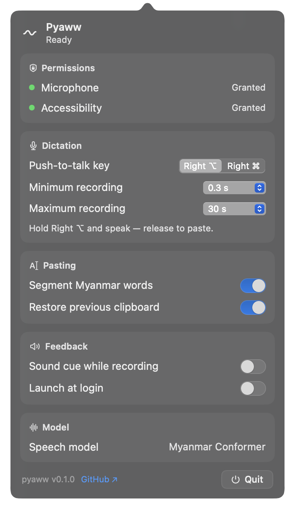

Pyaww (ပြော)
Speak Myanmar. It just types. မြန်မာလို ပြောလိုက်ပါ။ စာဖြစ်လာပါမယ်။
A menu bar dictation app for macOS. Hold a key, speak Myanmar, release — your words are typed for you. Fully offline: your voice never leaves your Mac. macOS အတွက် menu bar dictation အက်ပ်။ ခလုတ်တစ်ခု ဖိထားပြီး မြန်မာလို ပြောလိုက်ပါ၊ လွှတ်လိုက်ရင် စာသား ရိုက်ပြီးသား ဖြစ်နေပါပြီ။ လုံးဝ အော့ဖ်လိုင်း — သင့်အသံဖိုင် Mac ထဲကနေ ဘယ်တော့မှ မထွက်ပါဘူး။
v0.1.0 (beta) · 37 MB · Apple silicon (M1+) · macOS 14 Sonoma+ · free & open source (MIT) v0.1.0 (beta) · 37 MB · Apple silicon (M1+) · macOS 14+ · အခမဲ့နဲ့ open source (MIT)
First launch: macOS asks you to allow the app once — 30 seconds. How to install ↓ ပထမဆုံး ဖွင့်ချိန်: macOS က ခွင့်ပြုချက် တစ်ချက် တောင်းပါမယ် — 30 စက္ကန့်ပဲ ကြာပါတယ်။ တပ်ဆင်နည်း ↓
How it worksဘယ်လိုသုံးမလဲ
Hold Right ⌥Right ⌥ ဖိထားပါ
…or Right ⌘ — your pick. Switch any time from the panel.…သို့မဟုတ် Right ⌘ — ကြိုက်တာ ရွေးပါ။ Panel ကနေ အချိန်မရွေး ပြောင်းလို့ရပါတယ်။
Speak Myanmarမြန်မာလို ပြောပါ
Talk naturally. The menu bar wave turns red while it listens.သဘာဝအတိုင်း ပြောလိုက်ပါ။ နားထောင်နေစဉ် menu bar က wave အနီရောင် ဖြစ်နေပါမယ်။
Release — typed.လွှတ်လိုက်ပါ — ရိုက်ပြီးသား
The text lands right where you're typing. Nothing to fix, nothing to upload.စာသားက စာရိုက်နေတဲ့ နေရာမှာ တန်းရောက်သွားပါတယ်။ ဘာမှ ပြင်စရာ မလိုပါဘူး။
The whole app, one panelအက်ပ်တစ်ခုလုံး — panel တစ်ခုတည်း
Click the wave in your menu bar: permissions, key choice, timing, word segmentation, model status, and quit — nothing hidden.Menu bar က wave ကို နှိပ်လိုက်ပါ — permissions၊ ခလုတ်ရွေးချယ်မှု၊ အချိန်သတ်မှတ်ချက်၊ စကားလုံးဖြတ်ခြင်း၊ model အခြေအနေ၊ ပိတ်ခြင်း — အားလုံး တစ်နေရာတည်း။

What makes it differentထူးခြားချက်များ
Fully offlineလုံးဝ အော့ဖ်လိုင်း
The Myanmar speech model ships inside the app. No internet needed — ever.မြန်မာ speech model က အက်ပ်ထဲမှာ ပါပြီးသား။ အင်တာနက် လုံးဝ မလိုပါဘူး။
Voice privacyအသံ privacy
No account, no cloud, no analytics. The app makes no network requests at all.Account မရှိ၊ cloud မရှိ၊ tracking မရှိ။ အက်ပ်က network ကို လုံးဝ မသုံးပါဘူး။
Natural wordsသဘာဝ စကားလုံးများ
Myanmar word segmentation is built in, so the result reads like real writing.မြန်မာစာ စကားလုံးဖြတ်ခြင်း ပါဝင်တာကြောင့် စာက ဖတ်လို့ကောင်းပါတယ်။
Clipboard-safeClipboard ထိန်းသိမ်း
Your clipboard is restored right after the paste — copy-paste habits untouched.Paste လုပ်ပြီးတာနဲ့ clipboard အဟောင်း ပြန်ရှိပါပြီ — သင့်အလေ့အထ မပျက်ပါဘူး။
Quiet by designတိတ်ဆိတ်စွာ
A gentle sound cue, a red wave while recording, Esc to abandon. No windows to manage.အသံအနည်းငယ်၊ ရိုက်နေစဉ် wave အနီ၊ ပယ်ဖျက်လိုရင် Esc။ Window တွေ စီမံစရာ မလိုပါဘူး။
Ready at loginLogin မှာ အသင့်
Optional launch at login — the wave is right there when you sit down.Login ဝင်တာနဲ့ menu bar မှာ wave အသင့် ရှိနေပါပြီ။
Your voice never leaves your Mac.သင့်အသံဖိုင် Mac ထဲကနေ ဘယ်တော့မှ မထွက်ပါဘူး။
Recognition runs entirely on your Mac with a bundled Myanmar speech model — there is no server to leak to. No account, no analytics, no update pings. That's not a setting; it's the architecture.Speech recognition က သင့် Mac ပေါ်မှာပဲ အလုပ်လုပ်ပါတယ် — ဘယ်ဆာဗာကိုမှ အသံ မပို့ပါဘူး။ Account မရှိ၊ analytics မရှိ၊ update ping မရှိ။ ဒါက setting တစ်ခု မဟုတ်ဘူး — အက်ပ်ရဲ့ ဒီဇိုင်းပါ။
Install in a minuteတစ်မိနစ်အတွင်း တပ်ဆင်ပါ
- Download the DMG and open it.DMG ကို ဒေါင်းလုဒ်လုပ်ပြီး ဖွင့်ပါ။
- Drag Pyaww into Applications — or use the installer dialog.Pyaww ကို Applications ထဲ ဆွဲထည့်ပါ — installer dialog ကို သုံးလည်း ရပါတယ်။
- First open: macOS will block it — it's a free project, not notarized. Go to System Settings → Privacy & Security → Open Anyway.ပထမဖွင့်ချိန် macOS က ပိတ်ထားပါမယ် — အခမဲ့ project ဖြစ်ပြီး notarize မလုပ်ထားလို့ပါ။ System Settings → Privacy & Security → Open Anyway ကို သွားပါ။
- Click the wave — you're set. Grant Microphone and Accessibility when asked.Wave ကို နှိပ်လိုက်ပါ — ပြီးပါပြီ။ တောင်းလာရင် Microphone နဲ့ Accessibility ကို ခွင့်ပြုပေးပါ။
Full walkthrough, including a Terminal fallback, in the README.အဆင့်ဆင့် လမ်းညွှန် (Terminal နည်းလမ်းအပါအဝင်) README မှာ ရှိပါတယ်။